Седона - отдых и туризм в Аризоне
Информация о городе

Седона — небольшой городок в Аризоне,
заслуживающий большего!
Наши преимущества
Рассмотрим 5 причин, по которым Седона круче, чем гранд каньон!
Настоящий городок
— №1 —
Cедона не аттракцион для туристов,
там течет своя жизнь
Жилье
Рекомендуем пожить в настоящем мотеле, все как в кино!
Еда
Всегда заказывайте фирменный бургер, вы не разочаруетесь!
Сувениры
Не только китайского,
но и местного производства!
Там есть мост дьявола
— №2 —
Да, по нему можно пройти!
Если вы осмелитесь, конечно
Небольшая
площадь— №3 —
Все интересные места находятся очень близко
Красивая
дорога— №4 —
Ехать в Седону из Лас‑Вегаса совсем не скучно!
Мало
туристов— №5 —
Большинство едет в гранд каньон и толпится там
Поиск отеля в Седоне
Заинтересовались?
Укажите предполагаемые даты поездки,
и мы покажем вам лучшие предложения гостиниц в Cедоне